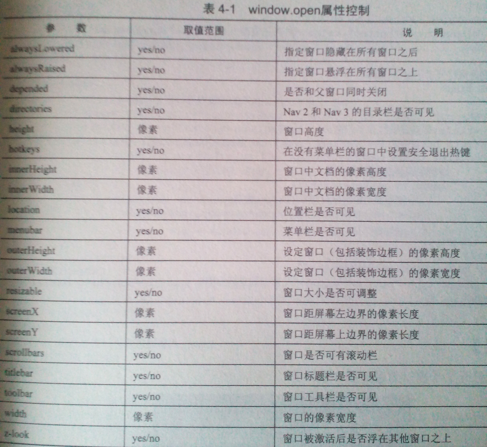

用户输入完后立即进行格式化校验哎呀呀呀，一个输入框：
给我你的爱让我陪着你去未来
咳咳~这里调用的是onblur事件，我推荐用的是onkeydown
用户输入完后立即进行格式化校验哎呀呀呀，一个输入框：
给我你的爱让我陪着你去未来
咳咳~这里调用的是onblur事件，我推荐用的是onkeydown
鼠标进去文本框变色--我并不推荐这样做，最好的做法是改变边框的颜色
<input type="text"
onmouseover="this.style.background = 'yellow'"
onmouseout="this.style.background = 'none'"/>
这里我把方法写进了行间，原理是利用onmouseover进去变色
输入文字时边框闪烁--就跟扣扣消息一样：第一个 ：第二个
在onfocus事件定义定时器，若边框颜色为黄色，则改为无；若无，则改为黄色，如此反复，生生不息也
Ps: 这里的onblur方法可以放在onfocus的方法里
从下往上的信息滚动特效


|
定义一个定时器滚动容器里的东西，，
// 定时器函数代码
function myMarquee() {
if (col2.offsetHeight <= container.scrollTop){
container.scrollTop -= col1.offsetHeight;
}else{
container.scrollTop++;
}
}
灯箱效果
这里主要是显示一种灯箱效果一样的广告，，，对z-index及display属性设置即可，不过通常我们喜欢关灯效果